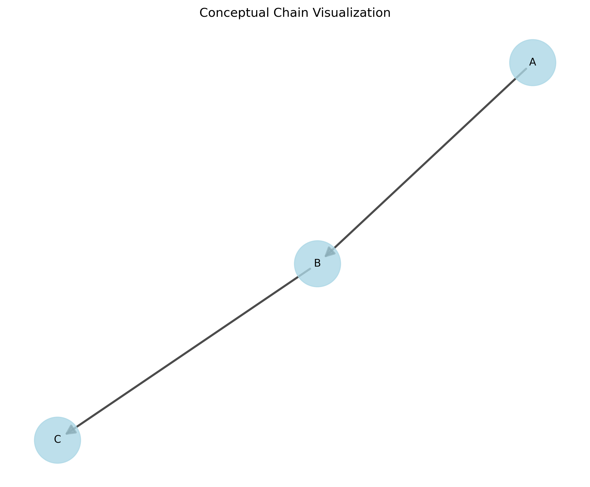
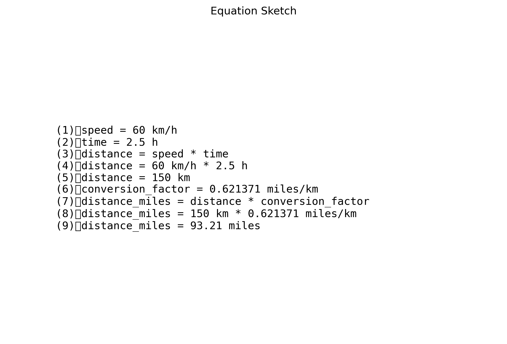

This page displays the test results from the mock reasoning test.
Conceptual Chaining
Ocean Acidification Query
"How does increased CO2 in the atmosphere relate to ocean acidification?"
Agent Response:
Increased CO2 in the atmosphere leads to ocean acidification through a chain of processes. When CO2 is absorbed by the ocean, it forms carbonic acid, which releases hydrogen ions, decreasing the ocean's pH. This acidification reduces carbonate availability, making it difficult for marine organisms to form shells and skeletons, disrupting marine ecosystems.
Reasoning Sketch:
Conceptual Chain Reasoning:
CO2 Emissions -> Atmospheric CO2 Increase -> Greenhouse Effect Enhancement
Greenhouse Effect Enhancement -> Global Temperature Rise -> Ocean Temperature Increase
Ocean Temperature Increase -> Decreased CO2 Solubility -> Reduced Ocean CO2 Absorption
Atmospheric CO2 Increase -> Ocean CO2 Absorption -> Carbonic Acid Formation
Carbonic Acid Formation -> Hydrogen Ion Release -> Decreased Ocean pH
Decreased Ocean pH -> Reduced Carbonate Availability -> Impaired Shell Formation
Visualization:

Chunked Symbolism
Distance Calculation Query
"If a car travels at 60 km/h for 2.5 hours, how far will it go?"
Agent Response:
If a car travels at 60 km/h for 2.5 hours, it will cover a distance of 150 km (calculated as speed × time = 60 km/h × 2.5 h = 150 km). Converting to miles, this is approximately 93.21 miles.
Reasoning Sketch:
Chunked Symbolism Reasoning:
# Define variables
speed = 60 km/h
time = 2.5 h
# Calculate distance
distance = speed * time
distance = 60 km/h * 2.5 h
distance = 150 km
# Convert to miles
conversion_factor = 0.621371 miles/km
distance_miles = distance * conversion_factor
distance_miles = 150 km * 0.621371 miles/km
distance_miles = 93.21 miles
Visualization:

Expert Lexicon
Medical Treatment Protocol Query
"What's the typical treatment protocol for a patient presenting with acute myocardial infarction?"
Agent Response:
The typical treatment protocol for acute myocardial infarction includes: immediate assessment with ECG and cardiac biomarkers; administration of aspirin and oxygen; timely reperfusion via PCI or fibrinolysis; anticoagulation; and secondary prevention with medications like statins and beta-blockers. This protocol aims to restore blood flow, limit infarct size, and prevent complications.
Reasoning Sketch:
Expert Lexicon Reasoning:
Acute Myocardial Infarction (AMI) Treatment Protocol:
1. Initial assessment - ECG within 10 minutes, cardiac biomarkers (troponin, CK-MB)
2. Immediate interventions - Aspirin (162-325mg), Oxygen if saturation < 90%, Nitroglycerin for pain
3. Reperfusion strategy - Primary PCI if available within 90 minutes, otherwise fibrinolysis
4. Anticoagulation - Heparin or low molecular weight heparin
5. Secondary prevention - Statins, Beta-blockers, ACE inhibitors/ARBs